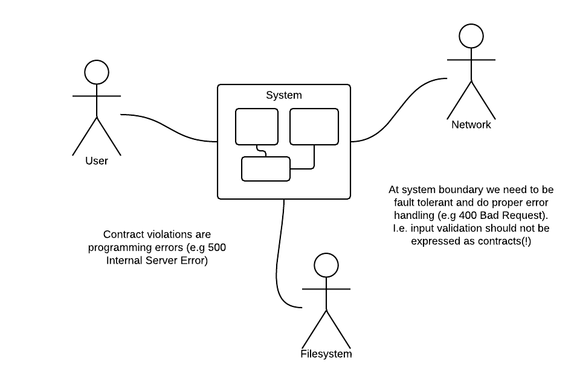
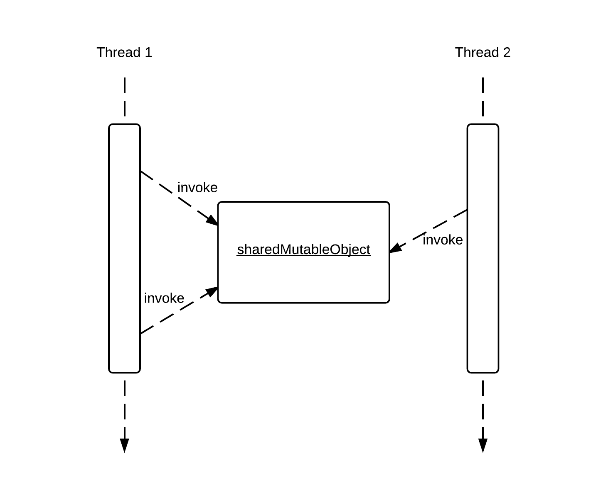

In-depth
Concepts
Programming by contract is a simple, yet powerful, technique to achieve assertive programming. The basic idea of valid4j is to make a clear distinction between programming errors and recoverable exceptions. Programming errors are not recoverable exceptions and should not be handled as such.
Programming errors
Programming errors are usually the result of an oversight of assumptions that really doesn’t hold. This may result in logical contradictions, like trying to use a non-existent object (e.g. NullPointerException) or invoking a method with an incomprehensible argument (e.g. IllegalArgumentException).
Logical errors must be corrected at design time. It doesn’t make sense to try illogical invocations in order to catch and recover from them. But we still want our programs to detect, expose and locate these bugs. Programming by contract gives us a technique to do just that.
Recoverable exceptions
Recoverable exceptions, on the other hand, signal exceptional cases that a correct program can and should handle gracefully. This might be network connection errors, file system errors or data input validation errors. This is what we in everyday talk refer to as error handling, fault tolerance and the like.
According to the Java exception hierarchy, as a general rule programming errors should inherit from RuntimeException whereas Error is reserved for internal errors of the Java runtime system. However, there is also differing opinions regarding the proper use of checked vs unchecked exceptions. This has led to the widespread use of RuntimeException also for recoverable exceptions.
Valid4J prefers to use Error to signal programming errors, and is agnostic to the question of using checked or unchecked recoverable exceptions.
Defensive programming, don’t do it
…a common, but sad example…
// Example of client code with sad defensive programming
Object someParam;
...
Stuff result = supplier.method(someParam);
if (result == null) {
// Some error handling
} else if (supplier.getState() == GREAT) {
result.doWork();
} else {
// Some more error handling
}
// Example of supplier code with sad defensive programming
public Stuff method(Object param) {
Stuff r;
if (param == null) {
// Some error handling
} else if (getState() == GOOD) {
r = a.doStuff();
} else {
// Even more error handling
}
return r;
The characteristic of the above code is that no one knows their responsibilities. No one knows what they are supposed to do or what others are supposed to do. Code is recognized by “maybe”/“perhaps”/“if you’re lucky” statements, obscuring the real semantics and valid error handling. Are there any programming errors hidden in this code? How do I know? Defensive programming hides programming errors in a bloat of code and - which is worse - are handled as ordinary recoverable errors! Programming errors should not be dealt with this way. Fail fast and don’t let programming errors go undetected.
Programming by contracts
The principle of design by contract is to clarify the responsibilities of the calling side (client) and the corresponding responsibilities of the called side (supplier). Delegating responsibilities is key to all good design. We do this by specifying which conditions must be met by the client, and which conditions must be met by the supplier.

A violation of the precondition means that the client has not fulfilled the contract, hence there is a programming error on the client side. The client is required to make sure the preconditions hold before calling a method.
A violation of the postcondition means that the supplier has not fulfilled the contract, hence there is a programming error on the supplier side. The supplier ensures that the postcondition holds before returning from a method.
By using the mechanism of contracts, bugs in the software are instantly exposed as soon as they are detected in runtime. A contract violation means that an assumption in the software doesn’t hold. This means we are executing in an unknown state.
Never try to catch and recover from a contract violation. A bug-free application should not rely on contracts being evaluated at all. A reasonable approach would be to abort the application, possibly followed with some kind of global recovery, like restarting the application, returning a HTTP 500 response or similar.
Require contracts (preconditions)
- The clients’ responsibility. What the client is required to fulfill.
- Expresses what has to be fulfilled before a method may be called.
- Expressed as condition(s) on the state of the supplier, and/or input parameters.
Ensure contracts (postconditions)
- The suppliers’ responsibility. What the supplier ensures will be fulfilled.
- Expresses what is fulfilled after the method has executed.
- Expressed as condition(s) on the state of the supplier, and/or return values.
- Recoverable exception(s) may be thrown in those cases where the method can not fulfill its postcondition(s). (This is error handling, not contracts…)
Invariants
- Expresses what is always fulfilled for an object.
- Important: Must hold even if a recoverable exception is thrown!
- This is trickier than it seems… Be careful - dragons be here!
Prefer immutable classes and check invariants at exit of constructor. This is a much simpler special case of invariants.
Assertive programming
Using contracts it’s easy to see what assumptions we can rely on and which conditions we are to achieve. The readability of the code is improved. Any if-else statements or try-catch clauses deal with proper error handling and fault tolerance, not programming errors. Code to the point!
Contractual assumptions are evaluated at runtime and any violations will immediately be detected, exposed and located which greatly speeds up and simplifies bug fixing. Slow, boring and tedious debugging is not needed any more.
// Example of assertive client code
Stuff result = supplier.method(someParam);
result.doWork();
// Example of assertive supplier code
public Stuff method(Object param) {
require(param, notNullValue());
require(getState(), equalTo(GOOD));
...
ensure(getState(), equalTo(GREAT));
return ensure(r, notNullValue());
}
Beneficial side effects of using contracts is that it
- encourages the use of a single exit/return statement where the ensure contract may be checked. Several return statements, each checking the postcondition, would clutter the code and be error prone.
- makes it obvious for the programmer to reason about what recoverable exceptions could occur when executing the code, i.e. the cases when the ensure contracts cannot be fulfilled.
Good manners to keep
Easy! Right? If we are using contracts to clarify the responsibilities between clients and suppliers there are a couple of things to keep in mind.
Separate queries from commands
There are two types of methods in the world:
- Commands/mutators - methods that change the program state in any way.
- Queries/accessors - methods that do not change the program state. These are side-effect free functions.
We should separate commands from queries. Our methods should have a single well-defined responsibility. Either they are commands, methods that change the current state of our program. Or they are queries, side-effect free methods that just return a result. Evaluating and verifying contracts shall not change the (perceived) program state. (Perceived that is; like acquiring & releasing a mutex may be ok, caching may be ok.)
Why? Goes without saying! Contracts are a part of the specification, not the semantics. The outcome of a contract check must not depend on how many times it has been checked (if any). A bug-free application should not rely on contracts being evaluated at all.
Only use queries in contract evaluations. Never use commands in contract evaluations.
Provide a complete (and usable) interface for clients
Specifying preconditions is the same as putting requirements on our clients. We are essentially demanding them to fulfill their responsibilities. Make sure they also have the possibility to achieve that.
public class BadManners {
public BadManners(int i) {
require(isValid(i)); // Never use private methods in contracts!!
// ...makes the class pretty useless
}
private static boolean isValid(int i) { ... }
}
When specifying contracts, provide clients with a public interface to make it possible for them to fulfill their obligations. Using private methods as a contract specification makes the class pretty useless. No client can fulfill their responsibilities if it’s not possible for them to check if they actually have fulfilled them.
Contracts vs. error handling
Contracts is not error handling! Error handling is not contracts!
Use contracts to ensure the correctness of a program. Contracts are used to detect logical errors or internal contradictions, making sure that the collaborating classes that constitute the program fulfill their obligations. Do not use contracts to deal with situations that couldn’t be considered to be in our control, like invalid user input, network connection errors, or file system issues. Contracts are no substitute for proper error handling and recovery.

Use error handling to ensure the robustness of a program. To deal with exceptional cases outside our control, like erroneous user input or failed network connections, we need error handling. Do not use error handling to deal with logical errors, i.e. programming errors.
// Example of using contracts when creating new instances of Country
public class Country {
// Use contract to specify that it is the _clients_ responsibility
// to make sure only valid country codes are given to the constructor.
// Invoking this constructor with an invalid country code is considered
// to be a programming error on the clients part.
public Country(String code) {
require(isValidCountryCode(code));
//
}
// Make method available (i.e public) for clients to use, making it possible
// for them to fulfill their part of the contract
public static boolean isValidCountryCode(String code) {
// ...
}
}
The above code is an example on how to use contracts to push a responsibility to the client. A client which doesn’t fulfill the contract has a programming error.
Below is the same code using a technique of error handling instead.
// Example of using error handling when creating new instances of Country
public static class Country {
// Define a recoverable exception for clients to catch and recover from
public static class InvalidCountryCodeException extends RuntimeException {}
// Use error handling to throw a recoverable exception in the case an
// invalid country code is supplied to the constructor. A proper client
// will have to catch and recover from such an exception should it occur.
public Country(String code) {
validate(isValidCountryCode(code), new InvalidCountryCodeException());
}
// Validation code may or may not be available for clients to use directly.
private static boolean isValidCountryCode(String code) {
// ...
}
}
How do we choose between using contracts and/or error handling? As a designer of a class we can decide how much responsibility we can and will put on our clients. What is the anticipated usage of the class? Is it possible to require clients to fulfill certain tasks?
A guideline to bear in mind is that in a bug-free application, the contract checking should be possible to switch off. (Possible that is; we are not recommending to switch them off, though, nota bene.) Proper error handling can not be switched off since there will be clients that rely on recoverable exceptions being thrown when exceptional conditions occur.
Also remember that (recoverable) exceptions should be used for exceptional cases, not the normal flow in a program.
Contracts and inheritance
When using contracts in inherited classes, remember the Liskov Substititution Principle (LSP). It states that, if S is a subtype of T, then objects of type T may be replaced with objects of type S. Think, S is-a T.

In regards to contracts this means that a subclass must not require more from its client, than the base class. And a subclass must not ensure less to its client, than the base class.
Therefore:
- Subclasses may have the same or weaker preconditions (as the base class), but not stronger.
- Subclasses may have the same or stronger postconditions (as the base class), but not weaker.
Contracts and multi-threading
The first rule of multi-threading: avoid shared mutable state!
That being said, if we want to use contracts on shared mutable objects, we can’t put preconditions on the current supplier state. This is because, in a multi-threaded environment there is no way for a client to make sure that such a condition holds before making the call (effectively making the class pretty useless).

One option would be to throw a (recoverable) exception if the condition is not satisfied. In such an event the client could just catch and recover from the failure.
// Example of throwing a recoverable exception validate(myState == GOOD_STATE, new InvalidStateException());
Another option would be to require the client to acquire exclusive access to the object prior to any invocations. If so, put contract on this!
// Example of precondition to acquire exclusive access before invocation require(Thread.holdsLock(this)); require(myState == GOOD_STATE);
Preconditions on input arguments is the same in a multi-threaded environment as in a single-threaded environment (assuming they themselves aren’t modified by multiple threads…).
Contracts and unit testing
Contracts and unit testing complement each other.
Contracts capture the general semantic of a method, e.g. addition: result == a+b, whereas unit tests verify a specific execution path, e.g. scenario: 3 == 1+2.
Contracts are written into the production code, whereas unit tests give an example of proper usage in non-production code.
Contracts are enforced during unreliable live execution, whereas unit tests exercise the code in a safe test environment. So, make sure to leave the contracts switched on, even in production.
Contracts specify the space of allowed invocations of a method, by specifying which conditions must be satisfied prior to invocation. This knowledge may be used to exclude the “out-of-specification” space from what is unit tested, making the testing effort concentrate on the space in-specification.
References
- Wikipedia, Design by Contract.
- Object-Oriented Software Construction, Chapter 11, Design by Contract.
- The Pragmatic Programmer, Chapter 4, Design by Contract & Assertive Programming.
- Google.